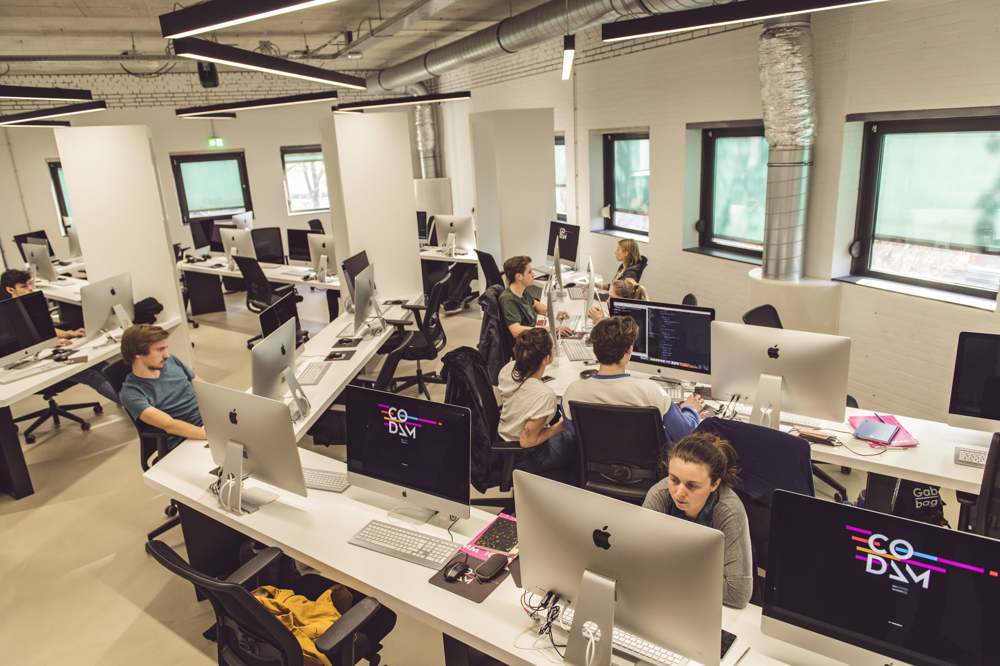

Codam Coding College
source: codam.homerun.coCodam Coding College is the only peer-to-peer coding institution in the Netherlands, with a world-class curriculum empowering the next leading generation of tech talent. Through our educational model, students are trained to become qualified software engineers and design inclusive solutions for the challenges of today and tomorrow! At Codam, students build technical expertise and grow adaptability, autonomy, and empathy, in close collaboration with private and public partners. We believe Codam students are ready to #writeyourfuture!
My School
I personally like the idea of peer-to-peer learning. You meet a lot of new people with interesting stories and you learn a lot of different things there. The projects are quite broad but mostly focus on C/C++. Later in the curriculum we develop a full stack web application with Docker, TypeScript, HTML, CSS, NestJS and React or another front end framework of our choice.